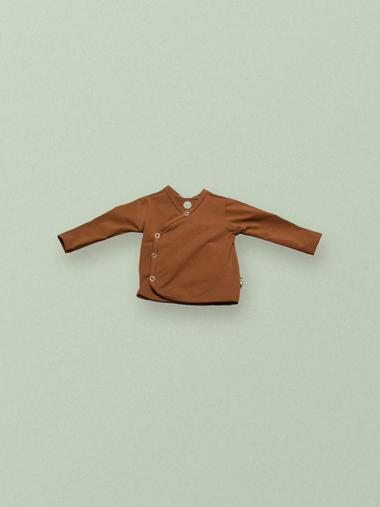
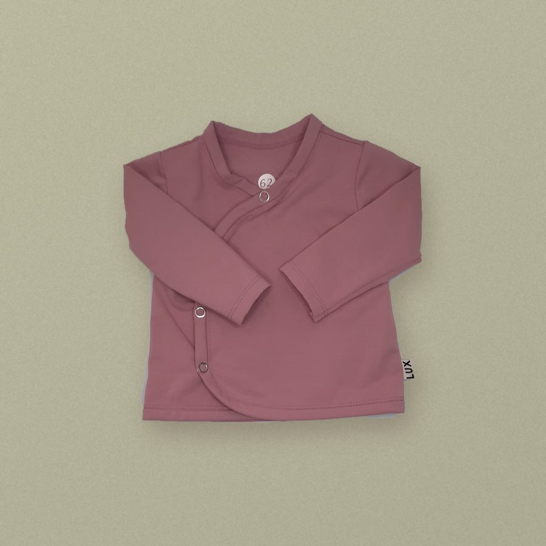
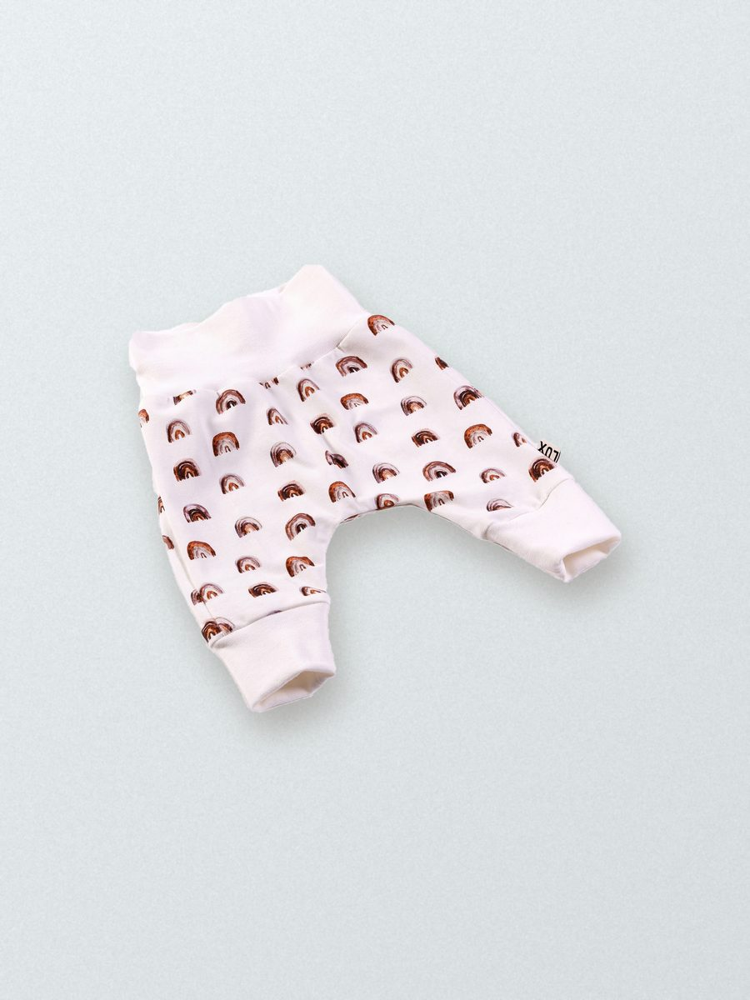
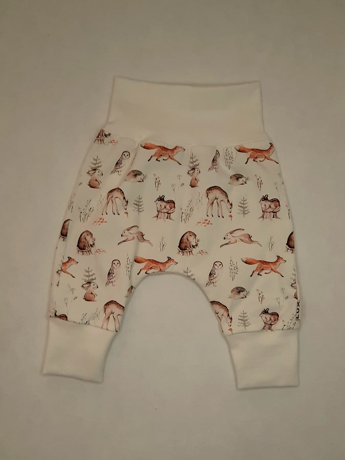
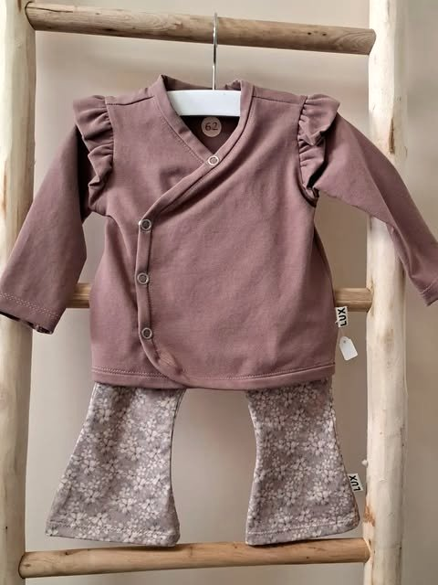
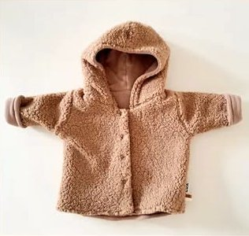
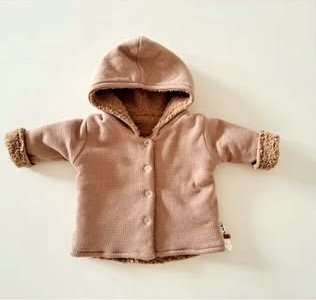
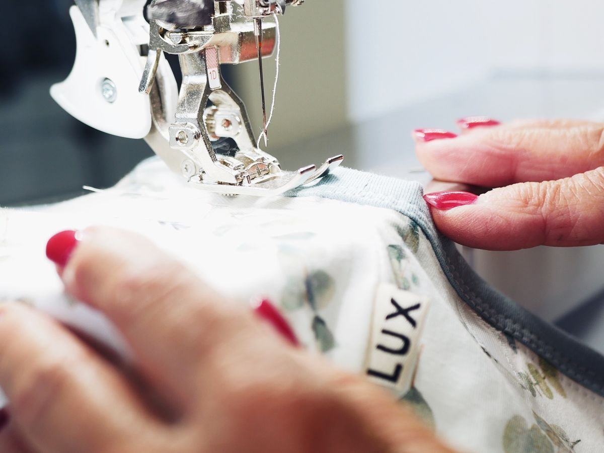

Inspiratie
Kleding
Maatwerk in (prematuur)babykleding: net iets anders en persoonlijks. Samen kies je wat het wordt, en in welke stof, kleur en maat. Een naam, geboortedatum of klein figuurtje, geborduurd op kleding, knuffels en zakjes. Carien maakt elk stuk met de hand in haar atelier in Ospel.
Foto's








Contact
Zin om samen
iets moois
te maken?
